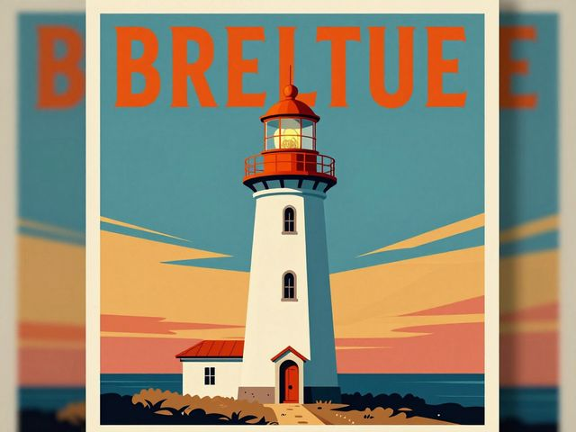

الجزء الأول كان شباك chat على الـ Mac Studio بتاعي. الجزء التاني حوّله لـ hub للبيت: الإيصالات، والـ calendar، والبيت الذكي، والـ coding sessions بتاعتي. وبعد تلات أسابيع كبر تاني، وبقيت مش عارف أشرحه في فقرة واحدة. فالمرة دي رسمته.
الجزء ده عن هو شغال إزاي دلوقتي: النظام كله في صورة واحدة، والسكة اللي بتمشيها رسالة واحدة، وdemos صغيرة للأدوات اللي اتضافت الشهر ده. الـ demos شغالة في الـ browser عندك ببيانات متألّفة. إنما الأدوات اللي وراها حقيقية.
النظام كله
كل حاجة شغالة على Mac Studio واحد في البيت: M4 Max بذاكرة 64 GB. الموبايلات بتوصله عن طريق شبكة خاصة، ومحرك الـ AI هو الـ hub اللي كل حاجة تانية متعلّقة فيه.
محرك الـ AI، الـ hub
apps جانبية، كل واحد بالـ database بتاعته
تلات أفكار ماسكة الحكاية كلها. الـ apps الجانبية برامج منفصلة، كل واحد بالـ database بتاعته، والـ chat بيستخدمها كأدوات. أي حاجة محتاجة model محلي بتستنى على بوابة الـ RAM، القاعدة اللي من الجزء التاني واللي بتمنع الـ Mac إنه يغرق في الـ models بتاعته. والـ cloud بياخد نص بس: تحويل الكلام لنص، والصوت، والصور، والـ chat model الاحتياطي، كلهم شغالين على الـ Mac.
رسالة واحدة ممكن توصل لإيه
الـ model عمره ما بيلمس app بنفسه. هو بيطلب أداة. والمحرك هو اللي بيقرر الأداة دي تشتغل لوحدها ولا محتاجة دوسة مني، ورد الـ app بيرجع متعلّم عليه إنه بيانات، مش أوامر.
بعد ما الـ model يقرا صفحة ويب أو مستند، حتى الأدوات «الآمنة» بتستأذن الأول.
ودي نفس السكة في الـ Hub. قراية الـ calendar بتحصل على طول؛ إنما الإضافة عليه بتستنى دوسة.
calendar_list · قراية بس · اشتغلت لوحدها
calendar_update · بتغيّر حاجة · بتستأذن الأول
نغيّر الميعاد؟
- الميعاد
- دكتور السنان
- كان
- الجمعة 3:00 العصر
- هيبقى
- السبت 11:00 الصبح
وفيه قاعدتين كمان فوق دول. الـ voice note عمرها ما تقدر توافق على كارت. وكل واحد في البيت ليه محادثاته: محادثات مراتي بتاعتها، وبتوعي بتوعي، وتسجيل دخول واحد بيفتح الـ calendar والبيت الذكي والـ shopping app لينا إحنا الاتنين.
Thinking Buddy: بكلّمه من غير ما ألمس حاجة
أجدد حتة، واللي بستخدمها أكتر من أي حاجة، هي buddy أقدر أكلّمه. بفتح صفحة على موبايلي، وأسيبه على جنب، وأفكّر بصوت عالي. وهو بيرد بصوتي أنا المستنسخ. صوتي عمره ما بيخرج من الـ Mac؛ اللي بيروح لـ Claude نص بس.
- الموبايلبسكت. speech detector صغير جداً في الـ browser بياخد باله من السكوت.
- الموبايلالصوت بيروح للـ Mac بعد ثانية سكوت واحدة. لو رجعت اتكلمت قبلها، بيستنى.
- الـ MacWhisper بيكتب اللي قلته وبأنهي لغة، في حوالي ربع ثانية. لو مش متأكد من كلمة، ممكن خطوة تنضيف تصلّح الكلام المكتوب.
- الـ cloudClaude بياخد كلامي كنص، ومعاه قواعد «خليك مختصر»، وكل أدوات الـ chat شغالة هنا. لو Claude واقع، Qwen المحلي بيرد بداله.
- الـ Macكل جملة بتخلص بتتقال بصوتي المستنسخ وبتتنضف من الوشّ. الجمل العربي بتظهر على الشاشة، مش بتتقال.
- الموبايلالموبايل بيشغّلهم واحدة واحدة. لو اتكلمت وهو بيتكلم، بيسكت ويسمع.
الصوت ده صوتي، متعمله clone ومتسجّل على الـ Mac بتاعي. وهو بالإنجليزي، لأن الـ buddy لسه بيكتب الردود العربي على الشاشة ومبيقولهاش.
أصعب حاجة ما كانتش السرعة. كانت مين يتكلم إمتى: buddy بينط في الكلام وأنا لسه بفكّر أوحش من واحد بطيء. فبيستنى ثانية سكوت كاملة قبل ما يبدأ، ولو الإجابة ما جهزتش بعد ثانيتين بيقول «ثانية واحدة.» بصوتي، عشان أعرف إنه سمعني. والوقتين دول ينفع يتغيّروا من شاشة Talk.
| إمتى | مين بيرد | فين |
|---|---|---|
| وأنا بتكلم | Claude Haiku | الـ cloud، نص بس |
| وأنا بكتب في صفحة الـ Buddy | Claude Sonnet | الـ cloud، نص بس |
| Claude واقع أو عدّى الحد الشهري | Qwen المحلي، 27B | الـ Mac بتاعي |
| chat لمس Finance | محلي بس، دايماً | الـ Mac بتاعي |
| إنه يسمعني ويرد بالكلام | Whisper وصوتي المستنسخ | الـ Mac بتاعي |
Image Studio
المحرك كان بيعرف يرسم من قبل كده. Image Studio بيدّيله مكان بجد: صفحة على الموبايل بختار منها الـ style، والجودة، والشكل، وكام صورة، وأتفرج على المهام وهي بتترسم. مهمة واحدة في المرة، كل واحدة بتعدّي على بوابة الـ RAM، ومفيش حاجة بتكمّل لوحدها بعد إعادة التشغيل.
ووراه، كل طلب بيعدّي على تلات خطوات. model بيكتب لحد تلات نسخ بـ styles مختلفة من الـ prompt. كل نسخة بتترسم. وبعدين vision check بيقرا كل صورة يدوّر على كلام ملخبط، أو إيدين غريبة، أو عيوب في الرسم، أو إن الحاجة الأساسية مش موجودة. الصورة اللي عليها علامة بتفضل محفوظة، وبيتعرض تصليح ليها، والتصليح دايماً بيستأذن الأول. والأصلية عمرها ما بتترمي.
فنار وقت المغرب · لحد تلات styles، أو ولا واحد وهو يختار لوحده.
الطابور: مهمة واحدة في المرة · بوابة الـ RAM: تمام




نصلّح البوستر؟
- المشكلة
- كلام ملخبط
- إزاي
- edit model، لحد مرتين، وبيتفحص من جديد كل مرة
- الأصلية
- بتفضل محفوظة دايماً
كل واحد ليه الـ gallery بتاعته، وفيه حد يومي للكل ما عدا أنا. ونفس الـ studio بيرد كمان في الـ chat: «ارسملي فنار» في Element X بيحط الصور في الـ gallery بتاعتي برضه.
crowd-check: بسأل ألف شخص متخيّل
دي تجربة. قبل ما أبني حاجة، عايز أسمع الاعتراضات بدري. crowd-check بيعمل panel من أكتر من ألف شخص متخيّل، بأعمار وخلفيات وعادات مختلفة، ويسألهم رأيهم في فكرة.
Claude Opus بيكتب الأشخاص والتقرير النهائي، بحد صرف ثابت على كل تشغيلة وعلى كل شهر. والـ models المحلية بتعمل الجزء التقيل، الاستبيان والمقابلات، عن طريق بوابة الـ RAM. كل خطوة script ليه رقم وبيكتب نتايجه في ملف، فأي رقم في أي تقرير أقدر أرجّعه للناس اللي قالوه.
خطوة 5 · model محلي بيكتب الفكرة من جديد بكلام محايد · أنا بوافق عليها
خطوة 6 · استبيان: 50 شخص من panel فيه 1,000 · محلي، ببلاش
خطوة 7 · النتايج
- «بس لو مش هضطر أكتب الإيصالات بإيدي.»
- «مرة في الشهر كفاية عليّا.»
الناس المتخيّلين مش زباين. النتايج بتقولي أنهي اعتراضات أختبرها مع ناس حقيقيين، مش إن حد هيشتري ولا لأ.
شغال على الـ Mac بس، ولسه مش على الشبكة الخاصة. الاستبيان وصفحة النتايج شغالين؛ والمراجعين والتقرير النهائي هم اللي جايين.
Finance: الـ app اللي الـ cloud عمره ما بيشوفه
كشوف حساب الكروت أكتر حاجة خاصة في البيت، فـ Finance ماشي بقواعد أشد من أي حاجة تانية. الـ database بتاعته متشفّرة وبتتفتح بـ passphrase عايشة في الذاكرة بس. بيبدأ مقفول بعد كل إعادة تشغيل، وبيقفل نفسه بعد نص ساعة من غير ما حد يستخدمه. ملفات الكشوف بتتقري في الذاكرة وعمرها ما بتتحفظ؛ اللي بيتحفظ بس السطور اللي بأكّدها، وأرقام الكروت بتتقص لآخر أربع أرقام.
وفوق الكشوف، بيلاقي الاشتراكات والمصاريف الغريبة، ويطابق إيصالات المحلات مع سطور الكارت، ويعمل عرض بسيط للـ cash flow. التنبيهات الجديدة ومواعيد الدفع بتوصل كرسالة في الـ chat بتاعي أنا، مش بتاع حد تاني.
القاعدة التانية جوه المحرك. Finance هو plug-in محلي بس: في أي رد بيعمله Claude، هو ببساطة مش موجود. والمحادثة اللي لمسته بتفضل على الـ model المحلي على طول.
| البقالة كارت آخره 0000 | $612.40 |
| البنزين كارت آخره 0000 | $148.75 |
| الاشتراكات لقى 3 | $41.97 |
| الأكل برّه | $96.20 |
وفيه شوية أقفال كمان، لأن الغلطة هنا هتبقى غالية. خمس passphrases غلط بيوقّفوا الفتح ربع ساعة. لو تشفير الـ disk على الـ Mac مقفول، Finance بيرفض يحفظ أي حاجة. والـ token اللي الـ chat بيستخدمه يقدر يقرا الإجماليات ويضيف imports مستنية التأكيد، بس عمره ما يقدر يفتح، أو يأكّد، أو يعدّل. والـ logs مفيهاش أي مبالغ، ولا أسماء محلات، ولا أسماء ملفات.
ترتيب المحرك
كل ده كبر بسرعة، والـ code كان باين عليه. ملف الـ chat كان بقى ملف واحد طويل جداً بيعمل كل حاجة. الأسبوع ده اتقسم لـ modules صغيرة، خطوة خطوة: الـ streaming، ولفّة الأدوات، والـ grounding، وأدوار الكلام في Thinking Buddy. ونفس الحكاية حصلت للملف اللي بيشغّل الأدوات. كل خطوة اتخططت، واتبنت، واتراجعت، وعدّت على security check، وكل test كان لازم يدّي نفس النتيجة قبل وبعد.
دي مش feature حد يقدر يشوفها. بس هي السبب إن الـ feature اللي جاية تاخد يوم مش أسبوع.
اللي جاي
المراجعين والتقرير النهائي لـ crowd-check، وإن مراتي تستخدمه بحد صرف خاص بيها. Finance أكتر: كشوف PDF، ومواعيد دفع الكروت على الـ calendar. السجلات الصحية، الـ plug-in المحلي بس اللي بعده. ونفس الشغل المعتاد: إني ألاقي الأماكن اللي بيفشل فيها من غير صوت، وأخليها تعلّي صوتها.
لسه مفيش اشتراك للـ models المحلية، ولسه مفيش حاجة بتخرج من البيت إلا لو اخترت الـ cloud، وFinance مش بيخرج خالص.
المحرك، والـ apps الجانبية بتاعته، والـ demos دي، والمقال ده، اتبنوا بـ Claude Code.